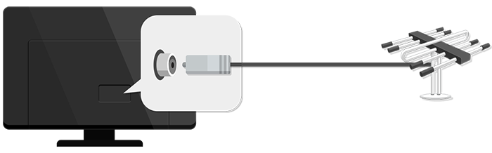

Ver canales de TV
-
Conecte la antena a la TV.
También puede conectar un dispositivo capaz de recibir emisiones, como un decodificador, en lugar de la antena.
Vaya a
 Conexión Conector de dispositivo y seleccione Decodificador que aparece en la lista de dispositivos para verlo.
Conexión Conector de dispositivo y seleccione Decodificador que aparece en la lista de dispositivos para verlo.

-
Inicie la función Canales Sintonización de canal (Sintonización y configuración de canales) Sint. Auto..
Busca y añade solo los canales que se están emitiendo.
Para resolver cualquier problema relacionado con esta función, consulte la sección Resolución de problemas de la Guía del usuario.